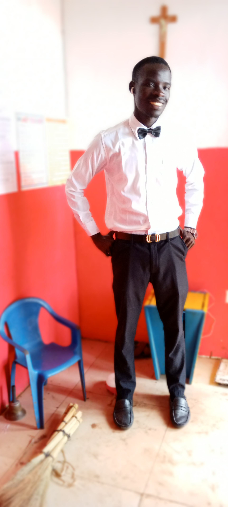
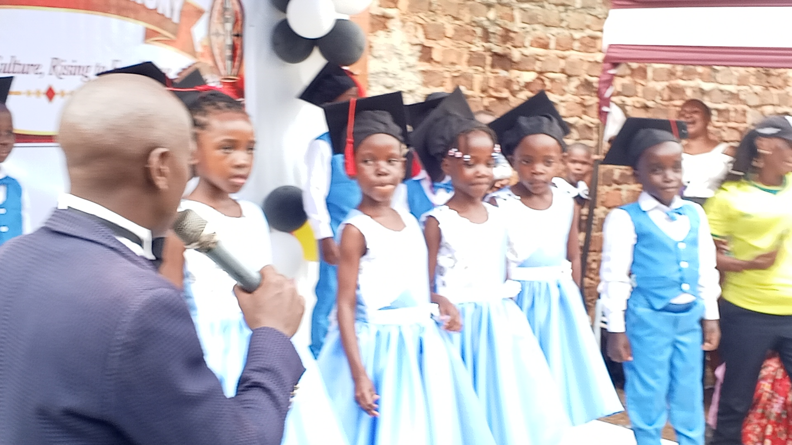
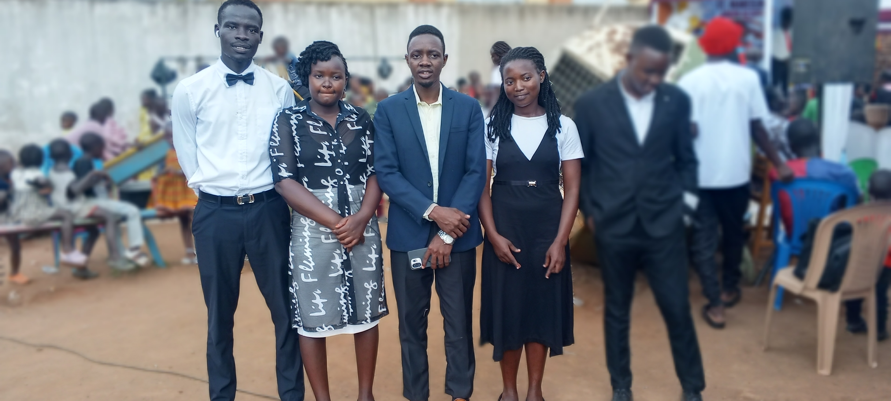

Parents and friends brought even more warmth to the school celebration by joining in the performances. Their participation helped turn the event into a shared occasion for children, families, and the wider community.
Having families present and involved means a great deal to pupils. The celebration was a reminder that a thriving school community is built together—by learners, teachers, parents, and friends.
Celebrating together


